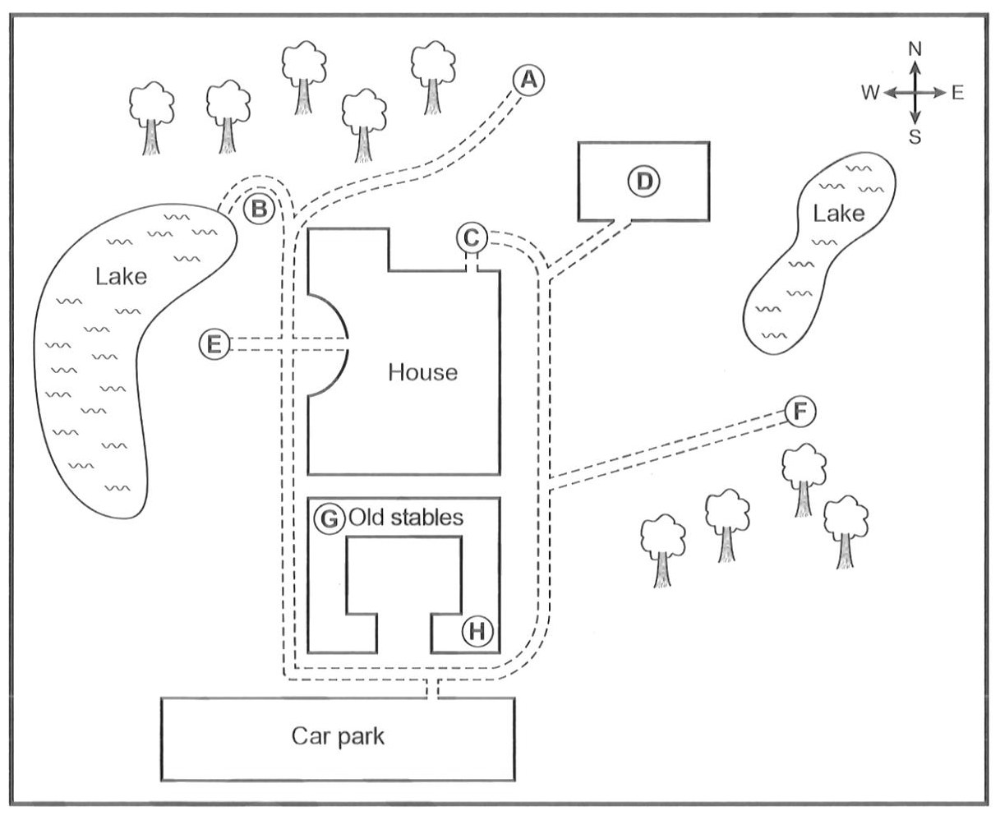

Farley House
Play the audio and choose the correct letter for each place. You hear it once in the exam,
so try a first listen without pausing. Then press Check answers, listen again with the
transcript, and see which words gave each answer.
Audio
Questions 16–20
Label the map below.
Choose the correct letter, A–H, for Questions 16–20.
Farley House

Transcript
Check your answers first, then the transcript opens here.